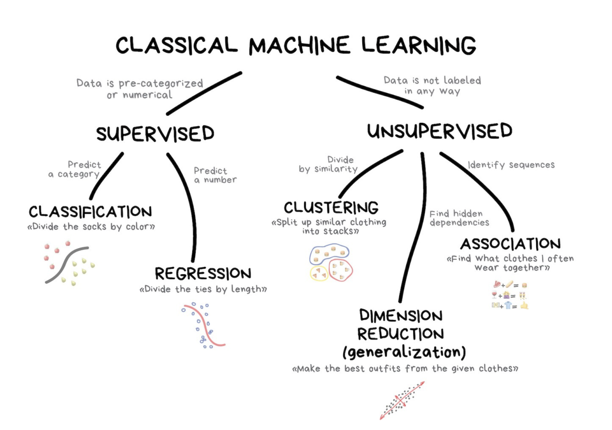

Introducción al Aprendizaje Automático
2026-01-23
Aprendizaje supervisado vs no supervisado

Algoritmos para analizar y agrupar (clusterizar) conjuntos de datos sin etiquetas
Clustering: agrupa datos sin etiquetas según sus similitudes o diferencias
Reducción de dimensionalidad: análisis de componentes principales

Uso de conjuntos de datos etiquetados para entrenar algoritmos que clasifican datos o predicen resultados con precisión
Hay una variable “y” o variable de resultado (outcome).
Algoritmos populares:
- Naive Bayes.
- Árboles de decisión.
- Regresión logística.

Entonces, ¿por dónde empezamos?

¿Cómo usamos nuestros datos?

El proceso real - como imagen

¿Cómo implementar todo esto?

Consistencia con tidymodels 😎
Con el paquete parsnip tenemos un marco que ahorra tiempo para explorar múltiples modelos.
Ejemplo:
# Logistic Regression
logistic_reg_glm_spec <-
logistic_reg() %>%
set_engine('glm') %>%
set_mode('classification')
# Decision Tree
decision_tree_rpart_spec <-
decision_tree(
tree_depth = tune(),
min_n = tune(),
cost_complexity = tune()
) %>%
set_engine("rpart") %>%
set_mode("classification")
# Bagged MARS Model
bag_mars_earth_spec <-
bag_mars() %>%
set_engine('earth') %>%
set_mode('classification')
# Naive Bayes
naive_Bayes_naivebayes_spec <-
naive_Bayes(smoothness = tune(), Laplace = tune()) %>%
set_engine('naivebayes') %>%
set_mode('classification')
# Random Forest
rand_forest_randomForest_spec <-
rand_forest(mtry = tune(), min_n = tune()) %>%
set_engine('randomForest') %>%
set_mode('classification')
Si todavía no te he convencido
El verdadero poder de tidymodels está en el paquete recipes.


Vincula una secuencia de pasos de preprocesamiento a un conjunto de datos de entrenamiento.
Define los roles que las variables van a desempeñar en la matriz de diseño.
Especifica qué limpieza de datos debe ocurrir y qué ingeniería de características (feature engineering) se debe realizar.
Un Resumen
- Sabemos qué es
tidymodels - Entendemos su importancia
- Empecemos a programar…

Análisis exploratorio de datos (EDA)
Exploremos la relación entre la dificultad para concentrarse, la dieta, el sueño, la actividad física y las horas jugando videojuegos.
healthyBehaviors |>
filter(!is.na(DifficultyConcentrating)) |>
mutate(
DifficultyConcentrating = case_when(
DifficultyConcentrating == 0 ~ "No",
DifficultyConcentrating == 1 ~ "Sí"
)
) |>
group_by(DifficultyConcentrating) |>
summarise(across(
c(
DrinkFruitJuice, EatFruit, EatSalad,
EatPotatoes, EatCarrots, EatOtherVeggies, DrinkSoda,
DrinkMilk, EatBreakfast, PhysicalActivity, HoursTV,
HoursVideoGames, HoursSleep, SportsDrinks, DrinksWater,
ConcussionSports
), mean,
na.rm = TRUE
)) |>
pivot_longer(-DifficultyConcentrating) |>
ggplot(aes(value,
fct_reorder(name, value),
fill = DifficultyConcentrating
)) +
geom_col(alpha = 0.9, position = "dodge", width = 0.7) +
scale_fill_manual(
values = c("No" = "#2E86AB", "Sí" = "#E63946"),
name = "Dificultad para\nconcentrarse"
) +
scale_x_continuous(expand = c(0, 0)) +
labs(
x = "Promedio",
y = NULL,
title = "Comportamientos saludables por dificultad de concentración"
) +
theme_minimal(base_size = 12) +
theme(
legend.position = "top",
legend.title = element_text(face = "bold", size = 11),
plot.title = element_text(face = "bold", size = 13, hjust = 0),
panel.grid.major.y = element_blank(),
panel.grid.minor = element_blank(),
axis.text.y = element_text(size = 10)
)
Recetas

- Todo modelo requiere una matriz de diseño como entrada.
- Matriz de diseño: datos “tidy”, con una observación por fila y un predictor por columna.
SIN EMBARGO
Las matrices de diseño no siempre vienen en el formato requerido:
- KNN necesita predictores normalizados
- Un modelo lineal requiere que los predictores categóricos estén codificados one-hot
- La regresión logística necesita datos completos (imputación)
Hornear la receta – programación declarativa

¡Este paso es crucial!
Debes revisar tus datos después de la receta para asegurarte de que las transformaciones se vean bien.
# A tibble: 13,677 × 24
DrinkFruitJuice EatFruit EatSalad EatPotatoes EatCarrots EatOtherVeggies
<dbl> <dbl> <dbl> <dbl> <dbl> <dbl>
1 2 3 1 1 1 2
2 2 7 6 5 5 6
3 1 4 2 2 2 5
4 2 2 1 2 2 3
5 4 5 1 2 3 4
6 2 1 2 1 1 2
7 1 4 1 2 1 2
8 4 2 2 1 2 3
9 2 3 3 1 1 3
10 2 2 1 1 1 3
# ℹ 13,667 more rows
# ℹ 18 more variables: DrinkSoda <dbl>, DrinkMilk <dbl>, EatBreakfast <dbl>,
# PhysicalActivity <dbl>, HoursTV <dbl>, HoursVideoGames <dbl>,
# HoursSleep <dbl>, SportsDrinks <dbl>, DrinksWater <dbl>,
# ConcussionSports <dbl>, DifficultyConcentrating <fct>, Sex_Male <dbl>,
# Grade_X11 <dbl>, Grade_X12 <dbl>, Grade_X9 <dbl>,
# SexOrientation_Gay.or.Lesbian <dbl>, SexOrientation_Heterosexual <dbl>, …Parsnip
 Una especificación de modelo tiene tres componentes:
Una especificación de modelo tiene tres componentes:
- Tipo: el tipo de modelo que se va a ajustar (p. ej., regresión lineal/logit, random forest o SVM).
- Modo: el tipo de predicción: regresión o clasificación.
- Motor (engine): el motor computacional implementado en
R, que normalmente corresponde a una función (lm,glm), un paquete (p. ej.,rpart,glmnet,randomForest) o un marco de cómputo (p. ej.,Stan,sparklyr).
Definir las especificaciones 
Logistic Regression Model Specification (classification)
Computational engine: glm parsnip en UNA imagen

Workflows (flujos de trabajo)

Agrupa la receta de preprocesamiento y la especificación del modelo. Es especialmente útil cuando tienes distintas combinaciones de recetas y especificaciones usando el paquete workflowsets.
Entendiendo los tamaños de efecto

Tarea